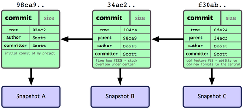
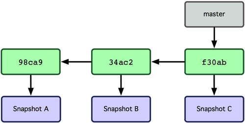

Git for scientists
Karthik Ram
@_inundata
@_inundata
A git repository is two things
- A key value store mapping checksum → file
- A tree talking about how those checksums correspond to versions, branches, etc.
A git repository is two things
- A key value store mapping checksum → file
- A tree talking about how those checksums correspond to versions, branches, etc.
To the User..
A magic directory with lots of filesystem features.
git init
Creates a new git repository
- project/
+ .git/
- README
The git repository lives in .git
Interact with the repository with a staging process
Demo
- git init
- git status
- git add
- git commit


Suggestions for best practices
- New feature → new branch
- Always use Descriptive branch names
- Always use Descriptive commit messages!

Fixing with a merge...

Master branch

Current branch